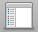

General
Labels
Sidebar
Advanced
Show all filename extensions
Show warning before changing an extension
Show warning before emptying the Trash
Empty Trash securely
When performing a search:
Search This Mac
Search the Current Folder
Use the Previous Search Scope